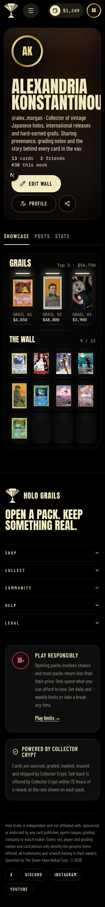
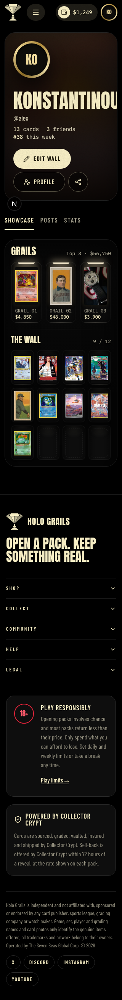

CONFIGURABLE SCENARIO · 2026-11-03T13:44:39.768Z
Holo Grails · required profile name
After a real demo profile save, the required name must fit horizontally inside its profile header and overflow clips.
Confirmed UI rule failure
14 valid cases checked · 12 passed · 2 failed · 0 inconclusive. This evaluates one declared UI rule, not overall component correctness.
Baseline: passed — Required text fragments fit horizontally inside the declared region and supported overflow clips.


Confirmed in 3/3 fresh contexts
Exported replay: same failure verified by executing the saved Playwright test. No repair was attempted.
Reduction: 262 → 83 bytes, 6 probes. Best found under configured candidates and budget.
{
"displayNames": [
"Konstantinou"
],
"handle": "alex",
"bio": "",
"width": 320,
"height": 568
}Reduction trail
[
{
"label": "Remove optional bio",
"accepted": true,
"status": "failed",
"reason": "Required text extends 24.14px beyond its horizontal region or overflow clip.",
"bytes": 102
},
{
"label": "Keep final name token",
"accepted": true,
"status": "failed",
"reason": "Required text extends 24.14px beyond its horizontal region or overflow clip.",
"bytes": 91
},
{
"label": "Shorten handle",
"accepted": true,
"status": "failed",
"reason": "Required text extends 24.14px beyond its horizontal region or overflow clip.",
"bytes": 84
},
{
"label": "Short control name",
"accepted": false,
"status": "passed",
"reason": "Required text fragments fit horizontally inside the declared region and supported overflow clips.",
"bytes": 75
},
{
"label": "Remove final name character",
"accepted": true,
"status": "failed",
"reason": "Required text extends 6.95px beyond its horizontal region or overflow clip.",
"bytes": 83
},
{
"label": "Remove final name character",
"accepted": false,
"status": "passed",
"reason": "Required text fragments fit horizontally inside the declared region and supported overflow clips.",
"bytes": 82
}
]All supplied cases
| Case | Result | Evidence |
|---|---|---|
| 24-character display name and full bio at 320px curated | failed | Required text extends 24.14px beyond its horizontal region or overflow clip. |
| Multilingual profile at phone width curated | passed | Required text fragments fit horizontally inside the declared region and supported overflow clips. |
| 15-character handle in landscape curated | passed | Required text fragments fit horizontally inside the declared region and supported overflow clips. |
| Empty optional bio on a tablet curated | passed | Required text fragments fit horizontally inside the declared region and supported overflow clips. |
| Long profile on a desktop curated | passed | Required text fragments fit horizontally inside the declared region and supported overflow clips. |
| Short valid profile at constrained height curated | passed | Required text fragments fit horizontally inside the declared region and supported overflow clips. |
| Seeded valid profile 1 generated | failed | Required text extends 24.14px beyond its horizontal region or overflow clip. |
| Seeded valid profile 2 generated | passed | Required text fragments fit horizontally inside the declared region and supported overflow clips. |
| Seeded valid profile 3 generated | passed | Required text fragments fit horizontally inside the declared region and supported overflow clips. |
| Seeded valid profile 4 generated | passed | Required text fragments fit horizontally inside the declared region and supported overflow clips. |
| Seeded valid profile 5 generated | passed | Required text fragments fit horizontally inside the declared region and supported overflow clips. |
| Seeded valid profile 6 generated | passed | Required text fragments fit horizontally inside the declared region and supported overflow clips. |
| Seeded valid profile 7 generated | passed | Required text fragments fit horizontally inside the declared region and supported overflow clips. |
| Seeded valid profile 8 generated | passed | Required text fragments fit horizontally inside the declared region and supported overflow clips. |
Source and scope
{
"kind": "user-owned-application",
"repository": "THE-SEVEN-SE4S/tradingcards-frontend",
"appRevision": "5e9ce9630960fccd94153402f1d2d011fcfdfd4a",
"mode": "Built-in browser mock API and demo session; no real backend or wallet.",
"policy": "Explicit horizontal fit for the full displayed name. Vertical clipping and occlusion are outside this rule."
}Chromium 156.0.8078.4 · Node v24.21.0 · seed 42 · 42.5s
Source fingerprint: 4610c5eebd960cbd8c0fc9f9552fae14b4e68df49377ef0a61b972e877857f84. Per-file hashes and exact fixtures are in report.json.